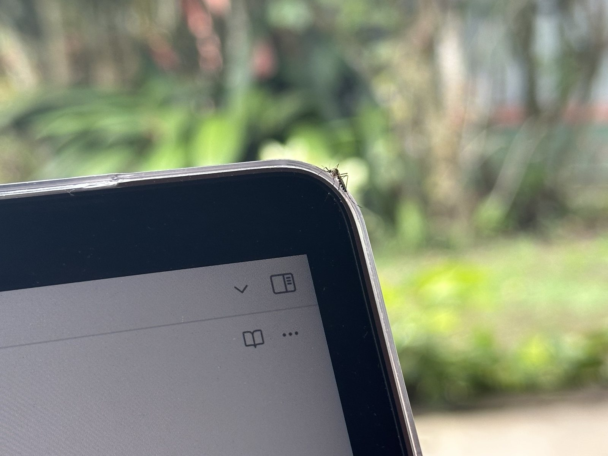

01

Public health · Interactive visualization
Mosquito Oviposition Explorer
An interactive dashboard for studying weekly mosquito oviposition across seasonal, anomalous, and short-term timescales in San Pedro de Jujuy.
Explore the dashboard ↗